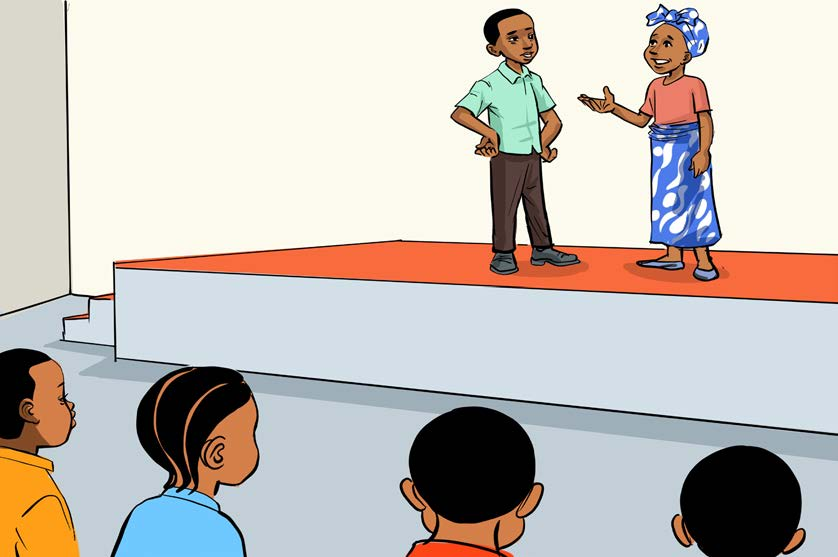

Kazi ya kufanya namba 1
Fanya mchezo wa kuigiza wa dakika 10 hadi 15 wenye ujumbe kwa jamii.
Maonesho ya sanaa sanifu
Katika ngazi ya shule, maonesho haya yanahusisha kuonesha kazi za ubunifu wa sanaa sanifu zilizofanywa kwa kipindi fulani, kwa mfano kuanzia mwezi hadi mwaka kutegemeana na onesho lenyewe. Onesho litahusisha kuona vitu mbalimbali vilivyotokana na uchoraji na ufinyanzi. Ili kushiriki katika maonesho ya sanaa sanifu kwa ngazi ya shule ni vyema kuzingatia hatua zifuatazo:
1.
Chagua jina la onesho litakaloendana na kazi za sanaa sanifu; ni vyema kuchagua jina ambalo linagusa maisha kwenye jamii unayotoka.